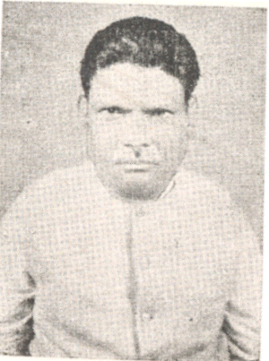

Iswar Marandi
A great politician
Here's a time line of Iswar Marandi's life:
- 1918 " - Born in Chota Simra, Jharkhand"
- 1937 " - Leaves his family's farm to attend the University of Minnesota, thanks to a Depression era program known as the "National Youth Administration"
- 1939 " - Has to stop school and save up more money. Works in the civilian Conservation as a labour, helps in making roads. "I saw how food changed them", he said. "All of this left scars on me."
- 1941 " - Finishes university and joined Political party known as Indian Nation Congress. "
- 1962 " - He was elected to the Lok Sabha, lower house of the Parliament of India from Rajmahal, Bihar as a member of the Indian National Congress. "
- 1972 " - At the age of 53 he died whilst in office. "
" Nothing corrupts a politician quite as much as friendship. Good politicians don't bribe; they make us like them. "
-- Matthew Parris